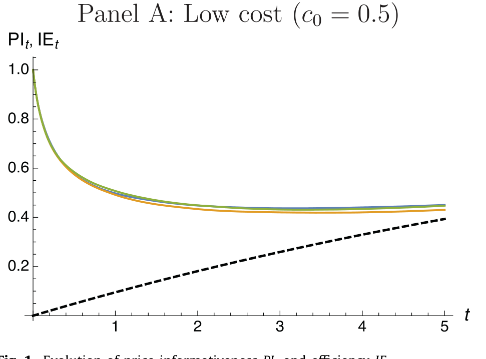
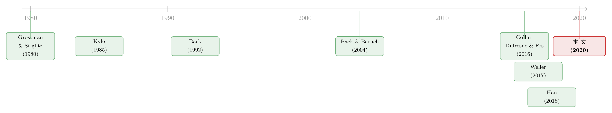

你以为内幕交易者「天生」知道答案，可她其实在挑时机下注
本文读的是 Banerjee & Breon-Drish (2020, JFE)：把经典的 Kyle (1985) 战略交易模型里那个「一开始就被白送私有信息」的内幕交易者，换成一个要自己花钱、并自己挑时机去获取信息的交易者。结论出人意料——当信息成本是「平滑」的，均衡的价格冲击与市场不确定性竟然对她获取信息的快慢完全无动于衷；而当信息成本是「一次性」的，市场干脆没有均衡可言，会直接塌掉。一句话：把标准战略交易模型的直觉，原封不动地搬到有信息获取的世界里，是危险的。
1 引言：一个被悄悄藏起来的假设
对市场微观结构稍有了解的人，几乎都绕不开 Kyle (1985) 这篇论文——截至 2019 年 9 月，它在 Google Scholar 上的引用已经超过 10,500 次。它教会我们一个极其干净的故事：一个掌握了私有信息的战略交易者（俗称「内幕交易者」），混在一群随机下单的噪声交易者中间，把订单悄悄送进市场；一个风险中性、竞争性的做市商只能看到总订单流，于是顺着订单流的方向调整价格。信息越多，价格冲击 (price impact，即 Kyle 的 \(\lambda\)) 越大，流动性越差；随着交易推进，价格一点点把私有信息「吸」进去，市场越来越有效率。
这套框架太成功了，以至于我们很容易忽略它脚下藏着的一块基石：那个内幕交易者，是在交易开始之前就被「白送」了信息的。 她什么时候知道、要不要花钱去知道、值不值得现在就去知道——这些问题，模型一概不问。
可现实里，信息从来不是从天上掉下来的。获取信息要花钱（雇分析师、买数据、盯一只股票），而且值不值得花这个钱，是随时间变化的：当一只股票的换手率突然飙升、噪声交易变多时，藏在订单流里「闷声发财」的机会更大，这时候去研究它才更划算。换句话说，投资者优化的不只是「怎么交易」，还有「何时去获取信息」。
于是，一个自然的问题是：如果把「何时知道」这个决策交还给交易者本人，Kyle 那套漂亮的结论还成立吗？ 这正是 Banerjee 和 Breon-Drish 要回答的。而他们的答案，会让你对「直接拿标准模型当简化版来用」这件事产生警惕。
（关于「内幕交易者在 Kyle 框架里如何与对手博弈信息」这一支，亦可参见《谁把信息让给了对手？——一个 Kyle 模型里「越无知越愿意分享」的反转》。）
2 把「何时知道」交还给交易者：模型设定
模型的骨架是连续时间的 Kyle (1985)，带一个随机的结束时点——一如 Back & Baruch (2004) 和 Caldentey & Stacchetti (2010)，再叠上 Collin-Dufresne & Fos (2016) 那种随机的噪声交易波动率。
市场上有两种资产：一种无风险资产（利率归零），一种风险资产。风险资产在一个随机时点 \(T\) 公开揭晓其终值
$$V \sim N(0,\ \Sigma_0).$$
随机时点这个设定主要是为了「让交易者对未来利润打折扣」，技术上方便，但不是结论的要害。
噪声交易者持有 \(Z_t\) 股，其变动由一个布朗运动驱动：
$$dZ_t = \nu_t\, dW_{Zt},$$
关键的新东西在这里——噪声交易的波动率 \(\nu_t\) 本身是一个随机过程：
$$d\nu_t = \mu_\nu(t,\nu_t)\,dt + \sigma_\nu(t,\nu_t)\,dW_{\nu t}.$$
\(\nu_t\) 越高，说明随机的、与基本面无关的「掩护性」交易越汹涌——这正是内幕交易者藏匿、获利的好时机。作者特意假设 \(\nu_t\) 对所有人公开可见（这没有损失，因为它就是均衡订单流的波动率，能从订单流的二次变差中完美读出）。
做市商只能看到总订单流 \(Y_t = X_t + Z_t\)（\(X_t\) 是战略交易者的累计持仓），并据此竞争性地定价：
$$P_t = \mathbb{E}\!\left[V \mid \mathcal{F}_t^P\right].$$
到这里都还是标准配方。真正关键的一步在于：交易者不再被白送 \(V\) 的信息。 她得自己花钱去获取，而且作者把「信息技术」分成了泾渭分明的两类：
- 平滑成本（smooth）：她观测到一串信号流 \(\{S_t\}\)，并可以动态地选择这些信号的（瞬时）精度 \(\eta_t \ge 0\)，为此付出一个流量成本，发生率为 \(c(\eta_t)\,dt\)。这对应「随时可以调高或调低对某只股票的关注/盯盘强度」。
- 一次性成本（lumpy）：她可以用一个固定成本 \(c>0\) 买到一个离散信号 \(S_0\)（á la Grossman & Stiglitz, 1980），但何时买，由她自己挑时机。这对应「雇新分析师、上新系统、研究一个新市场」这类带固定开支的获取。
无论哪一种，有一个共同的、致命重要的假设：做市商无法观测、也无法即时察觉交易者的信息获取行为，只能从订单流里反过来推断「她到底知道了没有、知道了多少」。
交易者要最大化的，是如下的期望交易利润（这是把 Kyle 的盈亏写进连续时间的标准形式）：
直觉上，这就是「在价格还没反映真相时尽量多持有，等价格涨上去/真相揭晓时获利」的连续时间写法。但请注意，这个目标里还没扣掉信息成本——成本会在两种技术下分别以 \(c(\eta_t)\,dt\) 或一次性的 \(c\) 进入她的净收益。正是「交易收益」与「信息成本」在时间上的此消彼长，催生了下面两个截然不同的世界。
3 平滑成本：均衡为何对「学得多快」无动于衷
先看平滑成本的世界。结论分三层，一层比一层反直觉。
首先，最符合直觉的一层：她在「掩护」最厚的时候学得最起劲。 作者证明，交易者最优选择的信号精度 \(\eta_t\) 是随机演化的，并且在噪声交易波动率高、价格冲击 \(\lambda\) 低（即流动性好）的时候更高。道理很朴素：噪声越大、流动性越好，她下单越不容易被价格「顶」回去，私有信息越值钱，于是她愿意付更多成本去把信号磨得更精。
接着，一个自然的、却容易被忽略的推论是：逆向选择与流动性可以正相关。 在教科书里，信息越多→逆向选择越严重→流动性越差，这是铁律。但在这个模型里，一个对未知情交易波动率的冲击会同时抬高流动性（压低 \(\lambda\)）和增加信息获取。也就是说，「市场更有流动性」和「有人正在更努力地打探消息」可以手拉手出现。这与 Ben-Rephael, Da & Israelsen (2017) 的证据相吻合——他们发现机构投资者的异常关注度，恰恰在异常交易量更高的日子里更高；也呼应 Drake, Roulstone & Thornock (2015) 关于 EDGAR 检索活动在高换手日之后更频繁的发现。
然后，真正关键、也最反直觉的一层来了：均衡的价格冲击与市场不确定性，对她获取信息的「速率」完全无动于衷。 这是全文最漂亮的结果。为什么？因为交易者是战略性的：当价格冲击变化时，她会通过「交易得更猛或更轻」来策略性地回应，从而把自己的信息优势平滑地、不紧不慢地释放出去。结果是——尽管她获取信息的速率会随交易机会（如 \(\nu_t\)）起舞，做市商从订单流里学到基本面的速率却纹丝不动。她学得快，并不意味着市场就更快地知道真相，因为她会相应地把交易摊得更开。
这一层立刻带来一个出人意料的推论。沿着 Weller (2017)，作者区分了两个貌似相近、实则不同的「价格反映信息」的度量：
- 价格信息含量 (price informativeness, PI)：一个绝对度量——到 \(t\) 时刻为止，做市商后验方差被削减的百分比，可以写成 $$PI_t = 1 - \frac{\mathrm{Var}\!\left(V \mid \mathcal{F}_t^P\right)}{\mathrm{Var}(V)}.$$
- 信息效率 (informational efficiency, IE)：一个相对度量——做市商关于 \(V\) 的后验精度，与战略交易者后验精度之比，即「价格揭示了交易者私有信息的多大比例」。
于是反转出现了：\(PI_t\) 总是随时间单调上升（价格越来越多地反映基本面），但 \(IE_t\) 却可能下降——只要交易者获取私有信息的速度，快过做市商从订单流里学习的速度，她的信息优势就会越拉越大，价格相对她「知道」的那部分反而越来越落后。而且，当未知情交易波动率高、交易者对资产payoff面临更大不确定性时，这种「信息含量上升、信息效率却下降」的背离更容易发生。下图把这两条曲线的演化画在了一起：

Figure 1: Evolution of price informativeness PI and efficiency IEt
值得强调的是，这套预测是直接从交易者的战略行为里长出来的，它既把本文与「外生信息禀赋」的模型区分开，也把它与那些「竞争性交易 + 动态获取」的模型（如 Han, 2018）区分开。在 Han (2018) 里，竞争性投资者在不确定性高时获取更精的信息，这会通过价格反馈压低未来的不确定性；而在本文里，做市商的不确定性却不受获取速率影响——区别就在于本文的战略交易者会主动把信息的使用「抹平」在时间上。
（关于「价格反映信息的多少」如何度量、以及波动率能否当信息的尺子，亦可参见《波动率，真的能当「信息」的尺子用吗？》。）
4 一次性成本：市场为什么会「塌掉」
如果说平滑成本的世界只是「直觉被悄悄改写」，那一次性成本的世界则是「直觉被彻底掀翻」——均衡根本不存在。
作者证明了一个相当强的非存在性结果：在一次性成本下，不存在任何带内生信息获取与战略交易的马尔可夫均衡，包括那些允许交易者使用混合获取策略的均衡（在可数个时点获取、在某段区间上以一定强度连续获取，或二者兼有）。市场会崩溃 (breakdown)。
为什么会这样？作者拆出了两股经济力量，它们在「成本是一次性的」时候联手把均衡逼死。
第一股力量：抢跑偏离 (preemption deviation)。 如果交易者能在做市商「预期」的时点之前、且不被察觉地获取信息，她就能用这份信息去攻击一个还「来不及做出反应」的定价规则。这一招直接排除掉所有「在初始日之后才获取信息」的均衡。
但真正关键、也更微妙的一步在于第二股力量：拖延偏离 (delay deviation)，它扎根于交易时机无差异 (trade-timing indifference)。 这个性质最早由 Back (1992) 注意到：在标准 Kyle 框架里，由于均衡中交易者「不交易」时价格函数不会出现任何可被利用的可预测性，一个已知情的战略交易者，在任意有限区间内，对「按均衡策略交易」还是「先按兵不动、之后再最优交易」是完全无差异的。
把这一点和一次性成本拼起来，灾难就发生了：既然「在某段区间里不交易」不损失任何期望交易收益，那么在任何被设想为均衡的获取时点上，交易者总可以选择再等一会儿——等过一段区间，再去获取信息。这个拖延偏离严格更优，因为她的期望交易收益一分钱不少，却能（按现值计）把那笔一次性成本往后拖、从而省下贴现。于是任何一个「在某时点获取」的候选均衡，都会被「再拖一拖」给击穿。没有任何时点站得住脚，市场自然无从均衡。
这个非存在性结果比看上去更普适：作者指出，只要「交易时机无差异」成立，它就适用。而这一性质在很一般的设定下都会冒出来——做市商或交易者风险厌恶、做市商非完全竞争、交易频繁但非连续、乃至不贴现的情形，统统涵盖。
这就引出了全文的「警世恒言」：信息获取技术的选择（平滑 vs. 一次性）绝不只是建模的便利或可解性问题，它会从根本上改变均衡的结论，甚至改变均衡是否存在。 一个值得玩味的对照是其姊妹篇 Banerjee & Breon-Drish (2019)：当一次性成本下的进入/获取可被做市商观测时，均衡反而能被维持，而且会出现延迟进入与延迟获取。可见，「不可观测」这一条假设，本身就是市场会不会塌掉的开关。
5 文献脉络
把这篇论文放回坐标系，它恰好坐在两条河流的交汇处。
一条河从 Grossman & Stiglitz (1980) 流出，研究金融市场中内生的信息获取：信息有价，但「完全信息有效的市场」自相矛盾——若价格揭示一切，谁还愿付费获取？这条河里的后来者（Hellwig, 1980；以及 Breon-Drish, 2015 对其的推广；还有 Veldkamp, 2006；Kendall, 2018；Dugast & Foucault, 2018 等），几乎都把信息获取限定在交易开始之前完成——本质上是个静态决策。
另一条河从 Kyle (1985) 流出，研究被外生禀赋了信息的投资者如何战略地交易（Back, 1992；Back & Baruch, 2004；Caldentey & Stacchetti, 2010；Collin-Dufresne & Fos, 2016）。这条河把「怎么交易」研究得淋漓尽致，却始终把「信息从哪来、何时来」搁置一旁。

本文的贡献，正是把这两条河真正地汇到一处：在连续时间 Kyle 框架里，让一个战略交易者自己挑时机、自己花钱去获取不可观测的信息。它最亲近的两个例外是 Banerjee & Breon-Drish (2019)（可观测的动态获取与进入）和 Han (2018)（竞争性、而非战略性交易下的动态获取）——而本文恰恰用「战略 vs. 竞争」「可观测 vs. 不可观测」这两把尺子，把自己和它们清清楚楚地区分了开来。此外，由于做市商并不知道交易者到底有多知情，本文也接上了「市场参与者对他人是否知情存在不确定性」这一支近期文献（如 Banerjee & Green, 2015）。
（与「战略交易者在 Kyle 世界里如何被定价与识别」相关的史海钩沉，亦可参见《十八世纪的「内幕交易」：当你不知道自己正在和董事做对手盘》。）
6 评论与延伸（Q&A + 研究方向）
(a) 几个可能的疑问
Q：「价格信息含量 PI」和「信息效率 IE」到底差在哪？为什么要分这两个？
PI 是绝对量——价格把基本面方差削减了多少（相对先验）；IE 是相对量——价格揭示了交易者私有信息的多大比例。打个比方：交易者知道的越来越多（分母涨），价格反映的也越来越多（分子涨），PI（看分子相对先验）可以一直涨，但 IE（分子比分母）却可能掉。本文的核心反转就藏在这道「绝对 vs. 相对」的缝里：二者可以背道而驰。
Q：「均衡价格冲击不受获取速率影响」——这听起来太强了，是不是假设堆出来的？
它不是假设，而是战略行为的内生结果。机制是：交易者面对价格冲击的变化会反向调节交易激进度，把信息优势平滑地释放。所以即便她「学得忽快忽慢」，做市商「学到基本面的速率」却被她主动抹平了。要害在于她是单一的、战略性的垄断信息者；若换成多个战略交易者或竞争性交易者，这种完美的「自我平滑」未必还成立。
Q：一次性成本下「没有均衡」，是不是因为模型太严苛（比如要求马尔可夫、要求纯策略）？
恰恰相反，作者把口子开得很大：允许策略依赖任意多（但有限）个状态变量，也允许相当一般的混合策略（可数时点混合、区间上连续混合等），结果依然是「不存在」。真正的驱动力是「交易时机无差异 + 不可观测」，而非技术性的限定。
Q：为什么「平滑」能有均衡，「一次性」就塌？差别到底在哪一处？
差在「成本能不能被无限细分地延后」。平滑成本下，交易者每一刻都在做边际取舍，没有「整笔成本」可供她战略性地往后拖；一次性成本下，那笔固定开支成了一个可以被「拖延偏离」反复攻击的靶子——只要拖一拖不损失交易收益，就总该再拖，于是没有时点稳得住。
Q：这结果和「内幕交易者越多、流动性越差」的经典直觉冲突吗？
在平滑情形里，本文给出了一个「逆向选择与流动性正相关」的反例：噪声波动率冲击同时压低 \(\lambda\)（流动性变好）并刺激更多信息获取。所以「看到流动性变好」未必等于「没人在打探消息」——这对用 \(\lambda\) 反推信息环境的实证工作是个提醒。
Q：随机结束时点 \(T\) 这个设定，会不会是结论的命门？
作者明确说不是。它的作用只是「让交易者对未来利润贴现」，换成固定期限但有其他贴现理由（主观贴现、非零无风险利率）也行；Section 4.2.5 还讨论了无贴现的情形，关键力量依旧在。
(b) 几个可能的研究问题与提案
1. 把「不可观测的信息获取」搬进公司债市场。
【经济故事】公司债是典型的「掩护性交易」与私有信息交织的市场：评级临界、要约回购、财报前后，知情者的获取动机随流动性涨落。本文预测「逆向选择与流动性可正相关」，在债市可能比股市更易识别。 【可行性】中。TRACE 提供成交与价格冲击度量，机构关注度可借 Ben-Rephael 等的 EDGAR/Bloomberg 终端代理；识别难点在于「信息获取速率」本身不可观测，需要结构估计或事件（如评级观察名单）做外生冲击。
2. 外资持有人作为「学习速度不同」的一类战略交易者。
【经济故事】外资机构与本地做市商的信息处理速度天然不同，本文「学得快≠市场学得快」的机制，可用来解释为何外资活跃的券种 PI 上升但 IE 停滞。 【可行性】中。需要持有人层面的成交数据（如 EMIR/各国监管成交库）与外资标识；识别外资「获取速率」仍依赖结构模型。
3. 检验「交易时机无差异」是否在真实高频数据里成立。
【经济故事】拖延偏离与抢跑偏离的存在性，依赖交易者在不交易区间内不损失收益。若能在高频订单簿里找到「知情者主动按兵不动」的窗口，就能直接给这一性质做经验检验。 【可行性】低到中。需要能近似识别知情订单的高频数据（如做市商内部数据或机构母单数据），可得性是主要瓶颈。
4. 可观测 vs. 不可观测获取的「自然实验」对照。
【经济故事】本文与 Banerjee & Breon-Drish (2019) 的对照表明，「监管是否强制披露信息获取/进入」可能决定市场是否塌掉。监管对持仓披露、研究披露的规则变化，提供了准自然实验。 【可行性】中。可借 13F 披露阈值、研究报告披露规则的变更做 DiD；难点是把「信息获取」与「交易」在数据里分离开。
5. 把随机噪声波动率换成可交易的不确定性指标。
【经济故事】本文让 \(\nu_t\) 外生随机；若让它由可观测的不确定性（如期权隐含波动率、政策不确定性）驱动，就能把「信息获取随不确定性起舞」做成可检验的预测。 【可行性】高。隐含波动率、不确定性指数均公开可得，与换手率、关注度代理拼接即可做时序检验，但只能做相关性而非干净因果。
7 我的判断
这篇论文的贡献是方法论上的「祛魅」：它告诉我们，把战略交易模型当成「带信息获取模型的简化版」来用，是一个可能出错的偷懒。两个对照——平滑 vs. 一次性、可观测 vs. 不可观测——都不是无关痛痒的技术选项，而是会改变均衡是否存在、改变 \(\lambda\) 与不确定性如何随获取速率变化的实质性假设。尤其是「PI 升而 IE 降」这一可检验的背离，给实证研究递了一把新尺子。
要说对识别（这里更准确地说是对「结论的稳健性」）的担忧，我有两点。其一，全文几乎完全是理论，可检验的量级仍停留在比较静态的方向上（如「\(\eta_t\) 随 \(\nu_t\) 上升、随 \(\lambda\) 下降」），离能落到一个具体回归系数还有距离；Figure 1 是数值演示而非数据。其二，「单一垄断信息者」这个核心简化撑起了全部优雅结论——「均衡对获取速率无动于衷」高度依赖她能完美自我平滑；一旦有多个战略交易者或加入竞争性知情者，这种平滑还能否成立，作者自己也只是「预期」会延续，留待后续。
我最想看到的后续，是有人把这套「不可观测获取」的逻辑，接到一个有多个异质战略交易者、且噪声波动率由可观测不确定性驱动的设定里——看看「逆向选择与流动性正相关」「PI 与 IE 背离」这两个最性感的预测，能不能在公司债或外资活跃的市场里被真正地量出来。
参考文献
Back, K. (1992). Insider trading in continuous time. Review of Financial Studies 5(3), 387–409.
Back, K., & Baruch, S. (2004). Information in securities markets: Kyle meets Glosten and Milgrom. Econometrica 72(2), 433–465.
Banerjee, S., & Breon-Drish, B. (2019). Dynamic Information Acquisition and Entry Into New Markets. Unpublished Working Paper, UC San Diego.
Banerjee, S., & Green, B. (2015). Signal or noise? Uncertainty and learning about whether other traders are informed. Journal of Financial Economics 117(2), 398–423.
Ben-Rephael, A., Da, Z., & Israelsen, R. D. (2017). It depends on where you search: Institutional investor attention and underreaction to news. Review of Financial Studies 30(9), 3009–3047.
Breon-Drish, B. (2015). On existence and uniqueness of equilibrium in a class of noisy rational expectations models. Review of Economic Studies 82(3), 868–921.
Caldentey, R., & Stacchetti, E. (2010). Insider trading with a random deadline. Econometrica 78(1), 245–283.
Collin-Dufresne, P., & Fos, V. (2016). Insider trading, stochastic liquidity, and equilibrium prices. Econometrica 84(4), 1441–1475.
Drake, M. S., Roulstone, D. T., & Thornock, J. R. (2015). The determinants and consequences of information acquisition via EDGAR. Contemporary Accounting Research 32(3), 1128–1161.
Grossman, S. J., & Stiglitz, J. E. (1980). On the impossibility of informationally efficient markets. American Economic Review 70(3), 393–408.
Han, B. (2018). Dynamic Information Acquisition and Asset Prices. Unpublished Working Paper, University of Maryland.
Hellwig, M. F. (1980). On the aggregation of information in competitive markets. Journal of Economic Theory 22(3), 477–498.
Kyle, A. S. (1985). Continuous auctions and insider trading. Econometrica 53(6), 1315–1335.
Weller, B. M. (2017). Does algorithmic trading reduce information acquisition? Review of Financial Studies 31(6), 2184–2226.